Cringleford,
Norwich.
Resurfacing an adopted residential estate — access roads, footways and driveways taken from planing through to finished surface course, to the client's specification.
An estate taken back to specification.
Cringleford is an adopted residential development on the edge of Norwich. The scheme covered the full estate — carriageways, footways and the driveways running off them — each needing a different approach and a different material.
Work opened with cold milling across 1,788 m², planing the existing surface out to the depths needed to bring the finished levels back within tolerance. Every area was then prepared ahead of the surfacing gangs arriving.
The access roads were machine laid in SMA10 — a stone mastic asphalt chosen for its durability under everyday residential traffic. Footways, driveways and the tight detail around service chambers, gullies and kerb lines were hand laid, where a machine can't reach and the finish comes down to the crew.
A section of footway had failed beyond a surface repair and was reconstructed outright, rebuilt in two layers with a binder course beneath the surface course.
The estate stayed live throughout — residents in their homes, driveways in use, and access maintained for the duration of the works.
At a glance
- Cringleford, Norwich, NR4
- Adopted residential estate
- Cold milling & surface preparation
- Machine lay & hand lay surfacing
- Footway reconstruction
Delivered on time, in budget and to specification.
What we laid.
Materials and depths as supplied and laid on site.
Planed out to achieve the correct tolerance levels for surfacing as per the client's specification, with surface preparation carried out to all areas prior to resurfacing.
SMA10 Surf 40/60 H/S at 40mm, supplied and laid to specification.
AC6 Dense Surf 100/150, supplied and laid to specification.
Rebuilt in two layers: AC20 Binder 100/150 at 50mm, followed by AC6 Dense Surf 100/150 at 20mm.
AC6 Dense Surf 100/150 at 20mm, supplied and laid.
From excavation
to finished surface.
The job in order: the footways and carriageway opened up, the surfacing going down, and the estate as it was handed back.
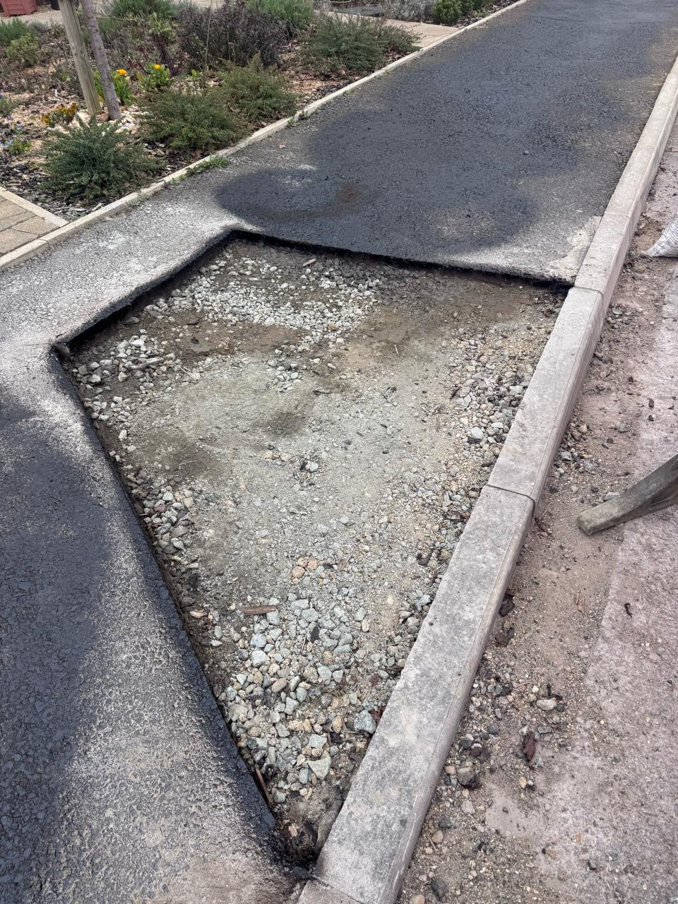
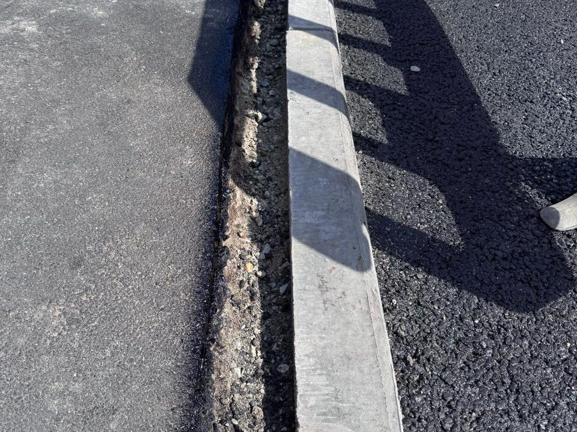

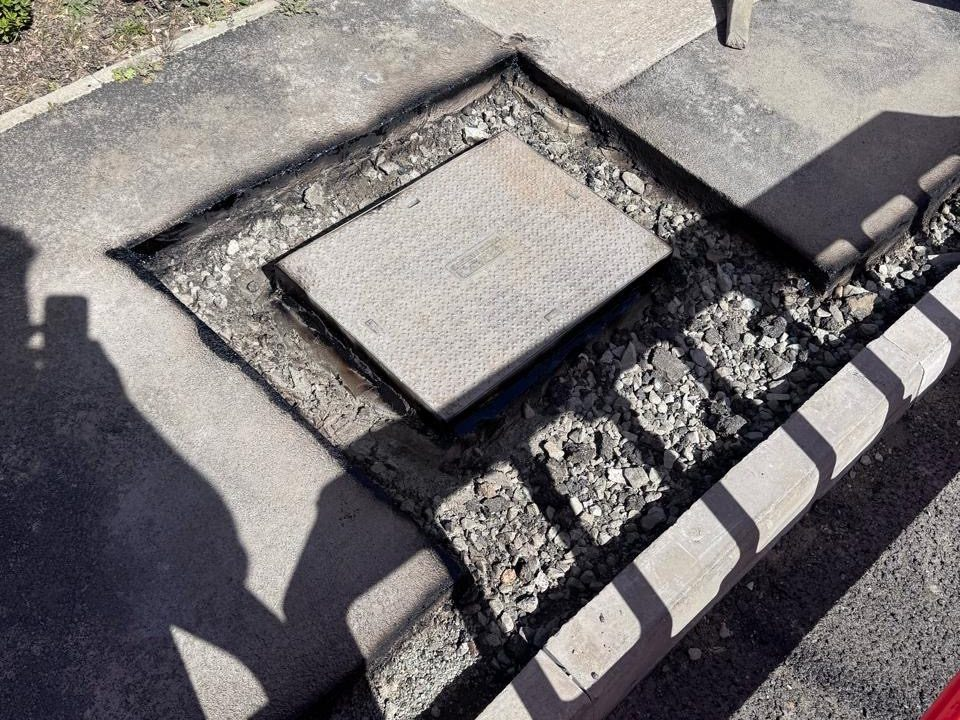
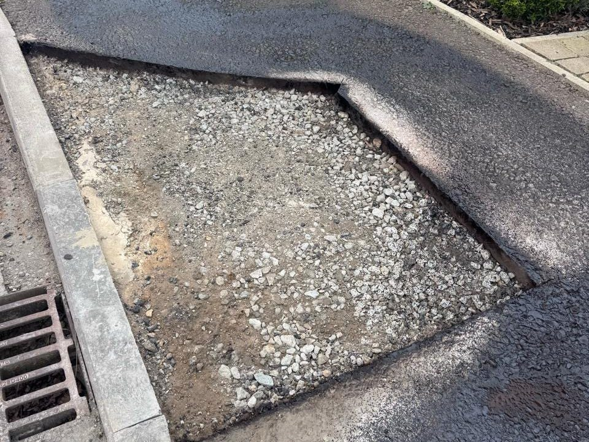
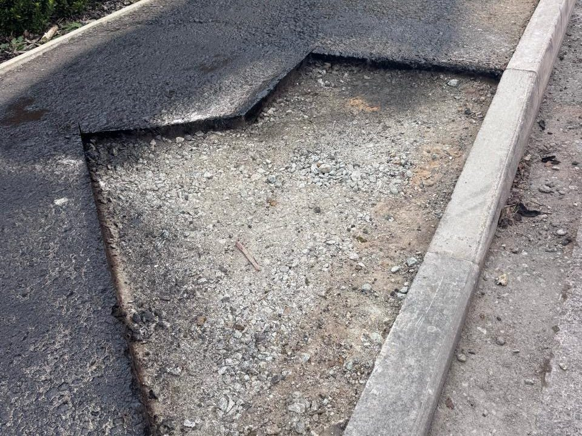
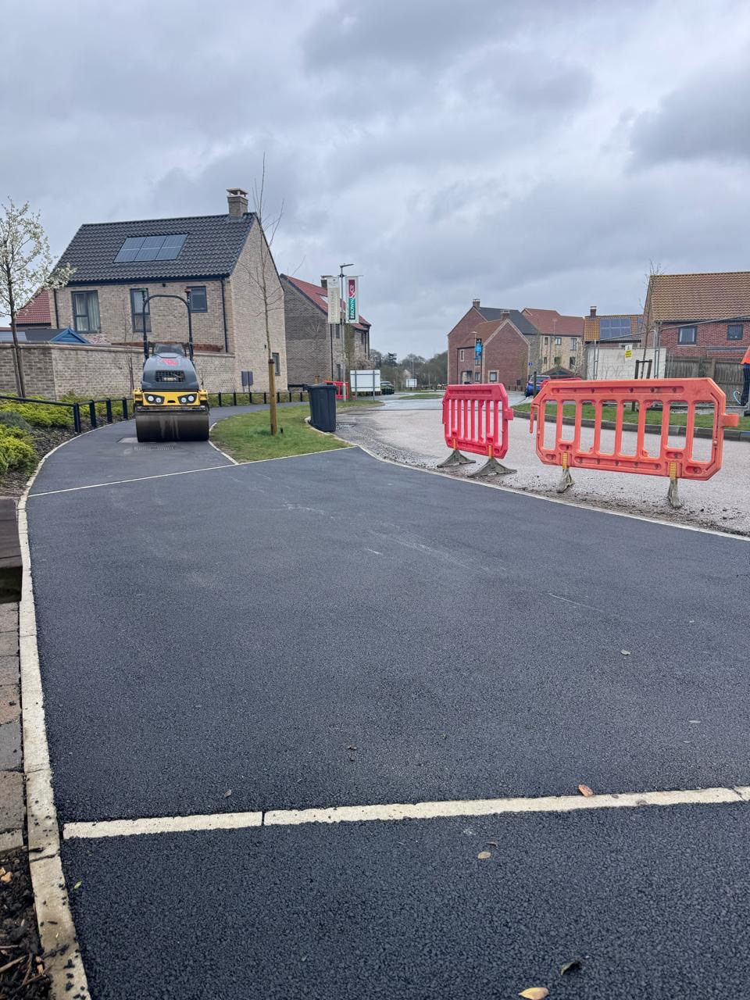
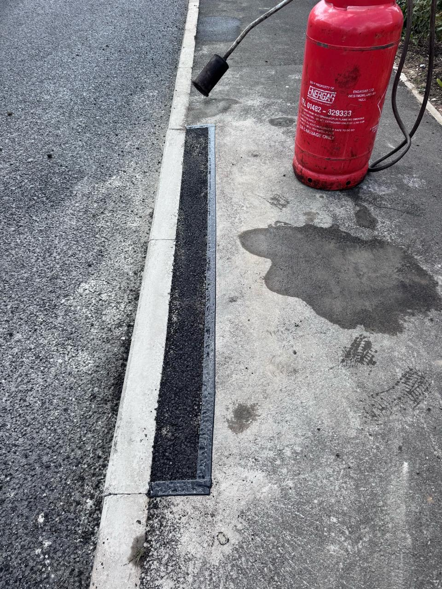

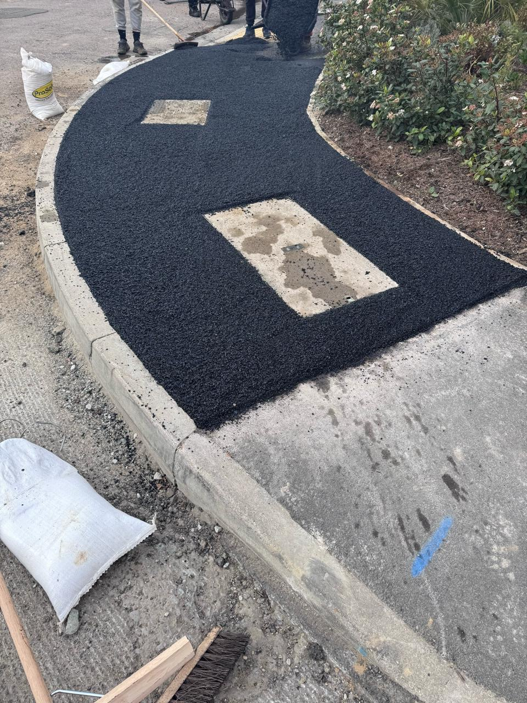
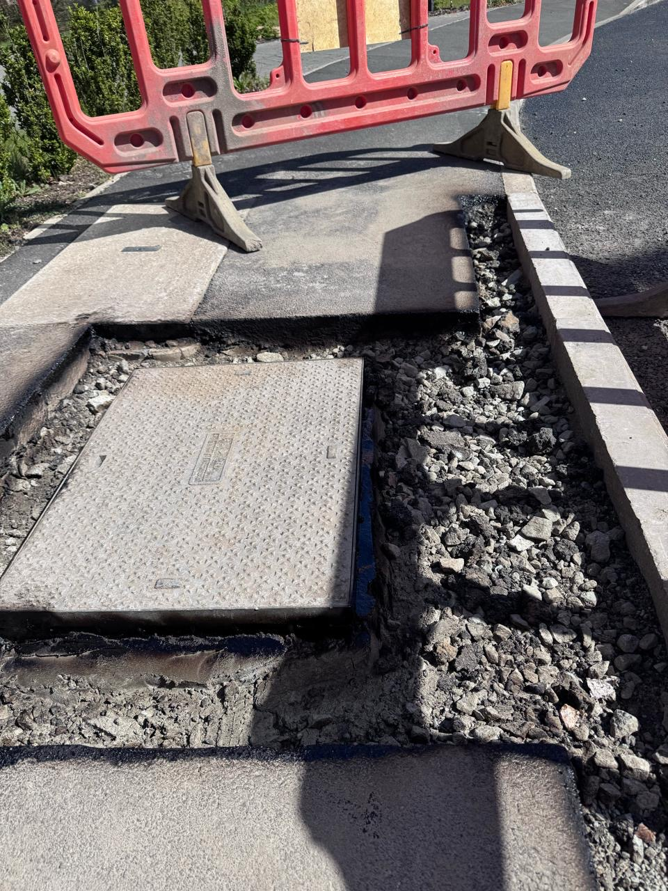
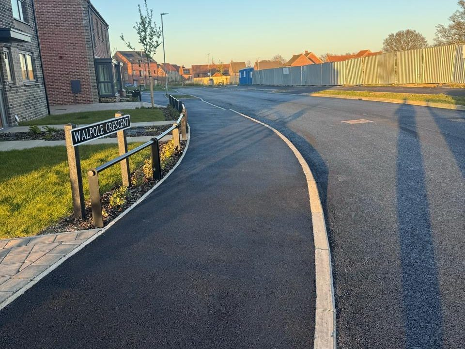
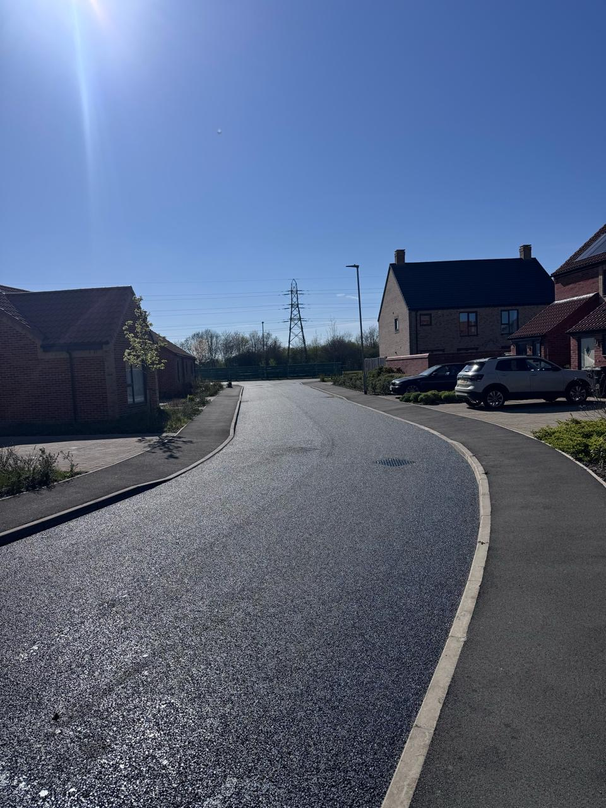